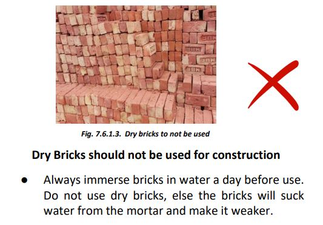
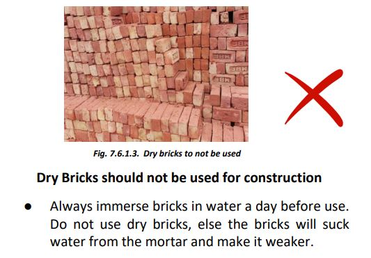
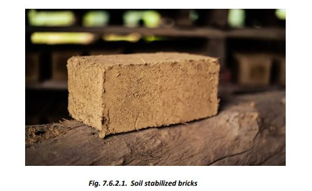

Bricks

7.6.1. Burnt Bricks

 


7.6.2. Sun-dried Stabilized Bricks

To check the suitability of local soil for making sun-dried bricks, make a 3-inch diameter ball of moist clay by hand. Allow it to dry. If the soil is too sandy, the ball will break under pressure between fingers; if it is too clayey, the ball will develop cracks on drying. A suitable clay will produce a strong, crack-free ball. A good soil contains about 35 to 40% clay and silt, with the rest as fine sand. The bricks can be stabilized by adding lime or cement in appropriate quantities and mixing thoroughly. These bricks have lower strength than fired bricks and are affected by moisture. They can be used in dry conditions with cement-sand mortar under proper guidance. In dry regions, 35 cm thick load-bearing walls can be constructed using clay bricks (strength: 20 Kg/sq cm or better) in cement mortar for two-story houses with appropriate earthquake and moisture protection measures. The walls can be protected from moisture by ferro-cement treatment or plaster for longer life and better finish.
7.6.3. Stabilized Soil Bricks

Cement lime stabilized soil bricks can also be cast at the site in regions where good clay is available but burnt clay bricks or cement lime stabilized bricks are costly or not locally available.
- Soil Analysis: Dissolve one-third glass of soil in ¾ glass of water, mix thoroughly, and let it settle for 24 hours. Check if the clay+silt deposit is 30-40% of the total deposit.
- Adjustment: If the clay+silt deposit exceeds 40%, mix in sand. For stabilization, add 5-6% cement or 6% lime by weight of the soil mass and knead thoroughly with the required amount of water.
- Brick/Block Formation: Ensure the mix is slightly wet and use a hand compressing machine to make bricks/blocks. Leave them to rest for 24-48 hours, then stack them in layers not exceeding 3 layers.
- Curing: Keep the bricks/blocks covered and moist for 15 days in a warm climate or 20 days in a cold climate to allow for proper curing.
- Masonry Construction: Use the bricks/blocks when they are at least 30 days old and fully dry. Masonry can be done using 1:6 cement-sand mortar or soil-cement mortar with about 7% cement.
- Water Curing: Start water curing after 24 hours for cement+sand mortar and 36 hours for stabilized clay mortar.